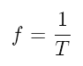
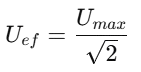

Teorie
Střídavé napětí je takové elektrické napětí, jehož velikost a směr se v čase periodicky mění. Na rozdíl od stejnosměrného napětí nemá stálou hodnotu ani stálou polaritu. V průběhu času se mění od kladných hodnot přes nulu až do záporných hodnot.
Nejčastěji se setkáváme se sinusovým střídavým napětím, které má pravidelný a plynulý průběh. Tento typ napětí se používá například v elektrické síti, kde je jeho efektivní hodnota 230 V a frekvence 50 Hz.
Střídavé napětí má zásadní význam v elektrotechnice, protože:
- lze jej snadno transformovat na jiné napěťové úrovně
- umožňuje efektivní přenos elektrické energie na velké vzdálenosti
- je vhodné pro napájení většiny elektrických zařízení
Střídavé napětí je charakterizováno několika základními veličinami:
Frekvence udává, kolikrát se periodický signál opakujeme za jednu sekundu. Značí se symbolem f a její jednotkou je hertz (Hz). souvisí s periodou signálu vztahem:
Perioda je doba, za kterou se průběh signálu jednou celý zopakuje. Značí se symbolem T a její jednotkou je sekunda (s).
Amplituda je maximální okamžitá hodnota střídavého napětí nebo proudu, které signál dosahuje. Určuje „výšku“ průběhu signálu od nulové hodnoty k jeho maximální hodnotě. Neříká však přímo nic o výkonu nebo energetickém účinku signálu.
Maximální napětí U𝑚𝑎𝑥 je největší okamžitá hodnota napětí během jedné periody. U sinusového průběhu odpovídá špičce sinusové křivky.
Efektivní hodnota napětí je taková hodnota stejnosměrného napětí, která by na daném odporu vyvolala stejný výkon jako dané střídavé napětí. Značí se U𝑒𝑓 nebo U𝑅𝑀𝑆. Pro sinusový průběh platí vztah:
Časový průběh střídavého napětí popisuje, jak se napětí mění v závislosti na čase. U sinusového průběhu lze okamžitou hodnotu napětí vyjádřit vztahem: